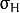
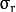
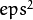

Domain Transform filter
This section describes interface for Domain Transform filter.
For more details about this filter see [Gastal11] and References.
DTFilter
-
class DTFilter : public Algorithm
Interface for realizations of Domain Transform filter.
createDTFilter
Factory method, create instance of DTFilter and produce initialization routines.
-
C++: Ptr<DTFilter> createDTFilter(InputArray guide, double sigmaSpatial, double sigmaColor, int mode=DTF_NC, int numIters=3)
-
Python: cv2.createDTFilter(guide, sigmaSpatial, sigmaColor[, mode[, numIters]]) → instance
| Parameters: |
- guide – guided image (used to build transformed distance, which describes edge structure of guided image).
- sigmaSpatial –  parameter in the original article, it’s similar to the sigma in the coordinate space into bilateralFilter().
- sigmaColor –  parameter in the original article, it’s similar to the sigma in the color space into bilateralFilter().
- mode – one form three modes DTF_NC, DTF_RF and DTF_IC which corresponds to three modes for filtering 2D signals in the article.
- numIters – optional number of iterations used for filtering, 3 is quite enough.
|
|---|
For more details about Domain Transform filter parameters, see the original article [Gastal11] and Domain Transform filter homepage.
DTFilter::filter
Produce domain transform filtering operation on source image.
-
C++: void DTFilter::filter(InputArray src, OutputArray dst, int dDepth=-1)
-
Python: cv2.DTFilter.filter(src, dst[, dDepth]) → None
| Parameters: |
- src – filtering image with unsigned 8-bit or floating-point 32-bit depth and up to 4 channels.
- dst – destination image.
- dDepth – optional depth of the output image. dDepth can be set to -1, which will be equivalent to src.depth().
|
|---|
dtFilter
Simple one-line Domain Transform filter call.
If you have multiple images to filter with the same guided image then use DTFilter interface to avoid extra computations on initialization stage.
-
C++: void dtFilter(InputArray guide, InputArray src, OutputArray dst, double sigmaSpatial, double sigmaColor, int mode=DTF_NC, int numIters=3)
-
Python: cv2.dtFilter(guide, src, sigmaSpatial, sigmaColor[, mode[, numIters]]) → None
| Parameters: |
- guide – guided image (also called as joint image) with unsigned 8-bit or floating-point 32-bit depth and up to 4 channels.
- src – filtering image with unsigned 8-bit or floating-point 32-bit depth and up to 4 channels.
- sigmaSpatial – parameter in the original article, it’s similar to the sigma in the coordinate space into bilateralFilter().
- sigmaColor – parameter in the original article, it’s similar to the sigma in the color space into bilateralFilter().
- mode – one form three modes DTF_NC, DTF_RF and DTF_IC which corresponds to three modes for filtering 2D signals in the article.
- numIters – optional number of iterations used for filtering, 3 is quite enough.
|
|---|
Guided Filter
This section describes interface for Guided Filter.
For more details about this filter see [Kaiming10] and References.
GuidedFilter
-
class GuidedFilter : public Algorithm
Interface for realizations of Guided Filter.
createGuidedFilter
Factory method, create instance of GuidedFilter and produce initialization routines.
-
C++: Ptr<GuidedFilter> createGuidedFilter(InputArray guide, int radius, double eps)
-
Python: cv2.createGuidedFilter(guide, radius, eps) → instance
| Parameters: |
- guide – guided image (or array of images) with up to 3 channels, if it have more then 3 channels then only first 3 channels will be used.
- radius – radius of Guided Filter.
- eps – regularization term of Guided Filter.  is similar to the sigma in the color space into bilateralFilter().
|
|---|
For more details about Guided Filter parameters, see the original article [Kaiming10].
GuidedFilter::filter
Apply Guided Filter to the filtering image.
-
C++: void GuidedFilter::filter(InputArray src, OutputArray dst, int dDepth=-1)
-
Python: cv2.GuidedFilter.filter(src, dst[, dDepth]) → None
| Parameters: |
- src – filtering image with any numbers of channels.
- dst – output image.
- dDepth – optional depth of the output image. dDepth can be set to -1, which will be equivalent to src.depth().
|
|---|
guidedFilter
Simple one-line Guided Filter call.
If you have multiple images to filter with the same guided image then use GuidedFilter interface to avoid extra computations on initialization stage.
-
C++: void guidedFilter(InputArray guide, InputArray src, OutputArray dst, int radius, double eps, int dDepth=-1)
-
Python: cv2.guidedFilter(guide, src, dst, radius, eps[, dDepth]) → None
| Parameters: |
- guide – guided image (or array of images) with up to 3 channels, if it have more then 3 channels then only first 3 channels will be used.
- src – filtering image with any numbers of channels.
- dst – output image.
- radius – radius of Guided Filter.
- eps – regularization term of Guided Filter. is similar to the sigma in the color space into bilateralFilter().
- dDepth – optional depth of the output image.
|
|---|
Adaptive Manifold Filter
This section describes interface for Adaptive Manifold Filter.
For more details about this filter see [Gastal12] and References.
AdaptiveManifoldFilter
-
class AdaptiveManifoldFilter : public Algorithm
Interface for Adaptive Manifold Filter realizations.
Below listed optional parameters which may be set up with Algorithm::set() function.
-
double sigma_s = 16.0
Spatial standard deviation.
-
double sigma_r = 0.2
Color space standard deviation.
-
int tree_height = -1
Height of the manifold tree (default = -1 : automatically computed).
-
int num_pca_iterations = 1
Number of iterations to computed the eigenvector.
-
bool adjust_outliers = false
Specify adjust outliers using Eq. 9 or not.
-
bool use_RNG = true
Specify use random number generator to compute eigenvector or not.
createAMFilter
Factory method, create instance of AdaptiveManifoldFilter and produce some initialization routines.
-
C++: Ptr<AdaptiveManifoldFilter> createAMFilter(double sigma_s, double sigma_r, bool adjust_outliers=false)
-
Python: cv2.createAMFilter(sigma_s, sigma_r, adjust_outliers) → instance
| Parameters: |
- sigma_s – spatial standard deviation.
- sigma_r – color space standard deviation, it is similar to the sigma in the color space into bilateralFilter().
- adjust_outliers – optional, specify perform outliers adjust operation or not, (Eq. 9) in the original paper.
|
|---|
For more details about Adaptive Manifold Filter parameters, see the original article [Gastal12].
Note
Joint images with CV_8U and CV_16U depth converted to images with CV_32F depth and [0; 1] color range before processing.
Hence color space sigma sigma_r must be in [0; 1] range, unlike same sigmas in bilateralFilter() and dtFilter() functions.
AdaptiveManifoldFilter::filter
Apply high-dimensional filtering using adaptive manifolds.
-
C++: void AdaptiveManifoldFilter::filter(InputArray src, OutputArray dst, InputArray joint=noArray())
-
Python: cv2.AdaptiveManifoldFilter.filter(src, dst[, joint]) → None
| Parameters: |
- src – filtering image with any numbers of channels.
- dst – output image.
- joint – optional joint (also called as guided) image with any numbers of channels.
|
|---|
amFilter
Simple one-line Adaptive Manifold Filter call.
-
C++: void amFilter(InputArray joint, InputArray src, OutputArray dst, double sigma_s, double sigma_r, bool adjust_outliers=false)
-
Python: cv2.amFilter(joint, src, dst, sigma_s, sigma_r[, adjust_outliers]) → None
| Parameters: |
- joint – joint (also called as guided) image or array of images with any numbers of channels.
- src – filtering image with any numbers of channels.
- dst – output image.
- sigma_s – spatial standard deviation.
- sigma_r – color space standard deviation, it is similar to the sigma in the color space into bilateralFilter().
- adjust_outliers – optional, specify perform outliers adjust operation or not, (Eq. 9) in the original paper.
|
|---|
Note
Joint images with CV_8U and CV_16U depth converted to images with CV_32F depth and [0; 1] color range before processing.
Hence color space sigma sigma_r must be in [0; 1] range, unlike same sigmas in bilateralFilter() and dtFilter() functions.
Joint Bilateral Filter
jointBilateralFilter
Applies the joint bilateral filter to an image.
-
C++: void jointBilateralFilter(InputArray joint, InputArray src, OutputArray dst, int d, double sigmaColor, double sigmaSpace, int borderType=BORDER_DEFAULT)
-
Python: cv2.jointBilateralFilter(joint, src, dst, d, sigmaColor, sigmaSpace[, borderType]) → None
| Parameters: |
- joint – Joint 8-bit or floating-point, 1-channel or 3-channel image.
- src – Source 8-bit or floating-point, 1-channel or 3-channel image with the same depth as joint image.
- dst – Destination image of the same size and type as src .
- d – Diameter of each pixel neighborhood that is used during filtering. If it is non-positive, it is computed from sigmaSpace .
- sigmaColor – Filter sigma in the color space. A larger value of the parameter means that farther colors within the pixel neighborhood (see sigmaSpace ) will be mixed together, resulting in larger areas of semi-equal color.
- sigmaSpace – Filter sigma in the coordinate space. A larger value of the parameter means that farther pixels will influence each other as long as their colors are close enough (see sigmaColor ). When d>0 , it specifies the neighborhood size regardless of sigmaSpace . Otherwise, d is proportional to sigmaSpace .
|
|---|
References
| [Gastal11] | (1, 2)
- Gastal and M. Oliveira, “Domain Transform for Edge-Aware Image and Video Processing”, Proceedings of SIGGRAPH, 2011, vol. 30, pp. 69:1 - 69:12.
The paper is available online.
|
| [Gastal12] | (1, 2)
- Gastal and M. Oliveira, “Adaptive manifolds for real-time high-dimensional filtering,” Proceedings of SIGGRAPH, 2012, vol. 31, pp. 33:1 - 33:13.
The paper is available online.
|
| [Kaiming10] | (1, 2) Kaiming He et. al., “Guided Image Filtering,” ECCV 2010, pp. 1 - 14.
The paper is available online.
|
| [Tomasi98] | Carlo Tomasi and Roberto Manduchi, “Bilateral filtering for gray and color images,” in Computer Vision, 1998. Sixth International Conference on . IEEE, 1998, pp. 839– 846.
The paper is available online.
|
| [Ziyang13] | Ziyang Ma et al., “Constant Time Weighted Median Filtering for Stereo Matching and Beyond,” ICCV, 2013, pp. 49 - 56.
The paper is available online.
|